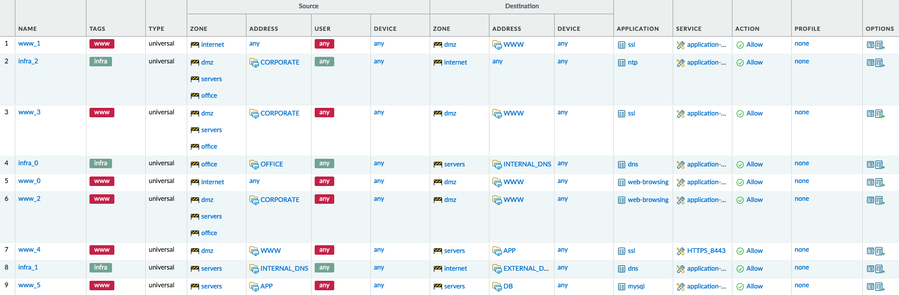

Palo Alto Firewall as Code¶

It has been about 6 years since the Automate IT event organized by me and Gabriele Gerbino. During the event, Xavier Homs presented a case that fascinated me. Today we might call it: Firewall as Code.
My interest was not just in the elegance of the solution but also in the practical implications for operations and security.
For several years, I managed firewalls and now, as a consultant, I see many client implementations. All the installations I encounter have the same problems:
- Hundreds of rules;
- Each rule is built based on the perception of the operator who creates it;
- No clear understanding, except for a brief description, of the origin and evolution of the rule;
- Likely obsolete rules remain configured because no one can confirm if they are necessary or not;
- Rules refer to decommissioned or reused systems, thereby introducing undefined risks;
- Rules are grouped and simplified solely to make operations easier (without any security assessment);
- Constant requests to add new rules without fully understanding what an application should or should not do;
- Impossibility to review due to the reasons above and because the rules change continuously;
- Enormous operational time spent managing the firewalls;
- No one can say if the policies comply with any security directives the company should have.
While there is software intended to solve the above problems, these solutions are often:
- Another patch for poorly designed processes;
- Complicated to use;
- So expensive that they are not economically sustainable for most companies.
Let's start from scratch by designing a process that addresses the problems described above, from which (and not the other way around) we derive a technology that allows us to manage our firewalls.
In the example shown, I used Palo Alto Networks firewalls. The reasons for this choice are:
- I am quite familiar with them;
- They have a configuration entirely exportable in text format (XML in particular);
- I can manipulate the configuration file and then apply it entirely at a later stage (commit).
The approach we will see should be applicable to all firewalls that meet these three properties.
The Process¶
The process I want to design is very simple:
- Application managers define the operating rules of their applications in terms of necessary traffic flows;
- Security managers define high-level traffic policies between different security zones, based on a risk assessment;
- Security architects design, implement, and oversee the firewall solutions;
- Automation takes the requirements from (1), applies the constraints defined in (2), generates the rule base, and applies it to the firewalls. The operational activities of the security architects are limited to what is defined in (3).
Specifically, application managers must define network requirements through files and make them available along with the application's code or documentation (Git would be a good tool, but not the only one). Daily or on request, the automation updates the policies.
The Model¶
As always, the modeling phase takes the most time. In the example, I assumed that:
- The definition of services in terms of protocol/port/application is centralized and managed by the security architects. The reason is that choosing the application associated with a specific port requires specific knowledge of the firewall solution.
- The definition of security zones and their relationship with networks is centralized and managed by the security architects. The reason is that the concept of a security zone is linked to network design.
- Settings like logging and security profiles are managed by the security architects.
- Each application's definition is done via two files:
networks.ymlandrules.yml. The maintenance of both files is the responsibility of the application manager.
Here's an example:
The above file defines three objects: WWW, APP, DB.
rules:
- destination-address: WWW
service: HTTP
description: |
Allow HTTP external traffic to exposed web server.
- destination-address: WWW
service: HTTPS
description: |
Allow HTTPS external traffic to exposed web server.
- source-address: WWW
destination-address: APP
service: HTTPS_8443
description: |
Allow traffic from exposed web server to application server.
- source-address: APP
destination-address: DB
service: MYSQL
description: |
Allow traffic from application server to database server.
The above file defines the rules for a specific application. Services are defined in the centralized services.yml file:
services:
HTTP:
applications: web-browsing
HTTPS:
applications: ssl
HTTPS_8443:
protocol: tcp
port: 8443
applications: ssl
MYSQL:
applications: mysql
Security zones are mapped based on the rules defined in the network-zone_mapping.yml file:
zones:
servers:
type: internal
networks:
- 10.20.2.0/24
dmz:
type: internal
networks:
- 10.20.1.0/24
# Internet (catch all)
internet:
type: external
networks:
- 0.0.0.0/0
Implementation Approach¶
To summarize the key points of the approach:
- Security architects need to be able to configure the firewalls in detail, and it's unthinkable to replicate an interface with all necessary settings;
- Application managers need to be able to abstractly define traffic rules.
The most practical approach is therefore:
- Read the updated configuration from the firewall;
- Delete all traffic rules and associated objects;
- Regenerate rules and objects from the files described above and add them to the cleaned configuration;
- Validate the configuration;
- Apply the configuration.
The advantage of this approach is clear: I never have to worry about checking if an object exists, if it is correct, or if it is in the right position. This greatly simplifies the implementation.
There are, of course, disadvantages or constraints:
- Rules must be written so that order does not matter;
- All rules must be defined by the files described above.
Exceptions can obviously be made, but each special case will complicate the implementation.
Tools¶
Once the model is defined, a tool must be chosen to translate the model into an actual configuration. In my evaluation, I focused on:
- Aerleon (formerly Google Carpica)
- pan-os-python: official libraries developed by Palo Alto Networks
- pan-python: privately developed libraries on which
pan-os-pythonis based (interesting, isn't it?) - PAN-OS XML API
- PAN-OS CLI
After some attempts with the official pan-os-python library, I decided to take a different path because the library configures the firewall object by object, whereas my approach required manipulating the entire configuration file.
I then explored pan-python, which seemed to do everything needed. However, due to poor documentation, I had to proceed by trial and error. I was almost at the point of writing my own library that directly invoked the native APIs.
Aerleon is a very interesting solution but did not reach the level of detail I needed. Using the CLI was unnecessary because Palo Alto Networks firewalls are fully manageable via native APIs.
Implementation¶
Currently, the automation is implemented in a single Python file that:
- Reads the configuration from the firewall in XML format;
- Reads the UUID and hit count value for each rule;
- Deletes objects and rules;
- Generates new objects and rules, retaining the UUID, and adds them to the XML;
- Performs some compliance checks;
- Sorts the rules from most used to least used;
- Uploads the configuration to the firewall;
- Applies the configuration.
The integration could be added to a CI/CD pipeline and customized based on needs.
There are still some things to manage:
- Rules that must have a specific order;
- Security profiles;
- Support for user groups;
- Specific customizations that someone will surely need.

Conclusions¶
Developing this automation took me about three days of work. Of course, the result is not production-ready but it is a good starting point.
The benefits of this approach are objective:
- Greatly reduced operational cost;
- Responsibility for the rules transferred to those who know the application;
- Clean configuration;
- Possibility of continuous checks on the formal correctness of the policy;
- Improved performance thanks to the ability to order rules by usage.
If you think this approach is futuristic, I must reveal that Xavier's talk was based on a real installation at a fairly large international client.
The full example code is available in the GitHub repository.